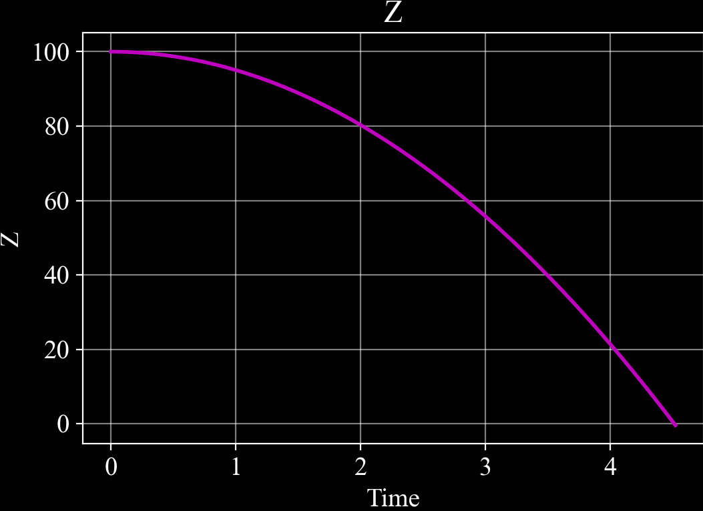

c4dynamics.eqm.int3#
- c4dynamics.eqm.int3(pt, forces, dt, derivs_out=False)#
A step integration of the equations of translational motion.
This method makes a numerical integration using the fourth-order Runge-Kutta method.
The integrated derivatives are of three dimensional translational motion as given by
eqm6.The result is an integrated state in a single interval of time where the size of the step is determined by the parameter dt.
Parameters#
- ptc4dynamics.datapoint
The datapoint which state vector is to be integrated.
- forcesnumpy.array or list
An external forces array acting on the body.
- dtfloat
Time step for integration.
- derivs_outboolen, optional
If true, returns the last three derivatives as an estimation for the acceleration of the datapoint.
Returns#
- Xnumpy.float64
An integrated state.
- dxdt4numpy.float64, optional
The last three derivatives of the equations of motion. These derivatives can use as an estimation for the acceleration of the datapoint. Returned if derivs_out is set to True.
Algorithm#
The integration steps follow the Runge-Kutta method:
Compute k1 = f(ti, yi)
Compute k2 = f(ti + dt / 2, yi + dt * k1 / 2)
Compute k3 = f(ti + dt / 2, yi + dt * k2 / 2)
Compute k4 = f(ti + dt, yi + dt * k3)
Update yi = yi + dt / 6 * (k1 + 2 * k2 + 2 * k3 + k4)
Examples#
Run the equations of motion on a mass in a free fall:
>>> h0 = 100 >>> pt = c4d.datapoint(z = h0) >>> dt = 1e-2 >>> t = np.arange(0, 10, dt) >>> for ti in t: ... if pt.z < 0: break ... pt.X = int3(pt, [0, 0, -c4d.g_ms2], dt) ... pt.store(ti) >>> pt.draw('z')
 Compare c4dynamics.eqm.int3 with an analytic soultion#
>>> z = h0 - .5 * c4d.g_ms2 * t**2 >>> fig = plt.subplots() >>> plt.plot(t[z > 0], z[z > 0], 'm', linewidth = 3, label = 'analytic') >>> ptz = pt.get_data('z') >>> plt.plot(pt.get_data('t')[ptz > 0], ptz[ptz > 0], 'c', linewidth = 1, label = 'c4dynamics.eqm.int3')